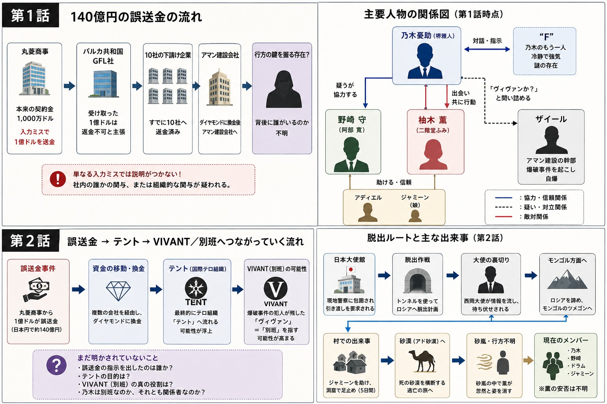

VIVANT 第2話｜「VIVANT＝別班」が浮上
テント・大使館の裏切り・アド砂漠への逃亡
第1話の逃亡劇を引き継ぎながら、「誤送金」「テント」「VIVANT（別班）」が一本につながり始める重要回。日本大使館での攻防からアド砂漠への脱出までを整理します。
1. 日本大使館での攻防
第1話の最後で、乃木・野崎・薫は命からがら日本大使館へ逃げ込みます。しかし安心できたのは一瞬だけ。バルカ側の外務大臣とチンギスが大使館へ乗り込み、爆破事件の容疑者として乃木と薫の引き渡しを要求します。
日本側は外交特権を理由に拒否しますが、大使館の外は現地警察に包囲され、3人は事実上閉じ込められた状態になります。野崎は冷静に状況を見ながら、外へ出る方法を探し始めます。
2. 野崎が乃木を疑い始める
公安の野崎は、乃木から誤送金の経緯を細かく聞き取ります。1,000万ドルが1億ドルへ書き換えられた流れを検証するうちに、「単なる入力ミスでは説明できない」と判断。
送金額を書き換えられる人物は限られており、丸菱商事内部に協力者がいる可能性が高いと推理します。社内の候補者を絞り込み、5人の中にモニターがいるのではないかと予測します。
3. 国際テロ組織「テント」
野崎は、公安が長年追っている国際テロ組織「テント」について説明します。誤送金された資金を追うと、複数の企業を経由し、最終的にテントへ渡る可能性が見えてきます。
- 丸菱商事の誤送金
- セドルの爆破事件
- 国際テロ組織テント
これまで別々に見えていた出来事が、一つの大きな事件としてつながり始めます。
4. 「VIVANT」という言葉と「別班」
ザイールが残した「ヴィヴァン」という言葉を野崎は調べ続けます。海外の情報機関へ問い合わせても有力な答えは得られません。
その中で浮かび上がるのが、日本に存在すると噂される極秘組織「別班（べっぱん）」です。
第2話ではまだ確証はありませんが、作品タイトルの意味が初めて大きく「別班」へ近づきます。

5. 大使館からの脱出作戦と大使の裏切り
日本政府の協力を得て、大使館から秘密裏に脱出する計画が立てられます。トンネルを抜け、ロシア方面へ逃れる作戦です。
しかし現地警察は、脱出ルートをあらかじめ把握していました。西岡大使が情報をチンギスへ流していたことが判明し、待ち伏せを受けます。
味方だと思っていた大使館内部にも裏切り者がいる。第2話の緊張感が一気に高まる場面です。
一方でナジムは味方として動き、一行は危機を切り抜けます。ロシア行きを断念し、モンゴル方面のヅメゴンを目指すことになります。
6. ジャミーンを助ける乃木
逃亡の途中、薫はジャミーンがいると思われる村へ向かいたいと主張します。ジャミーンは重度の脱水状態に陥っており、薫が治療にあたります。
野崎は「逃げることが最優先」と考えますが、乃木は目の前のジャミーンを見捨てることに反対します。
ドラムが薬を取りに行き、一行は砂漠の洞窟で5日間足止めされますが、ジャミーンは峠を越します。ジャミーンはいったん村へ戻り、乃木たちは「日本で待っている」と告げて別れます。
7. 野崎が「別班」を説明
野崎は乃木と薫に、別班について詳しく説明します。別班は、表向きには存在しないとされる自衛隊の非公認諜報部隊で、日本国内のテロを未然に防ぐ任務を担うとされています。
薫が「それで、乃木さんが別班だと間違えられたわけ？」と尋ねると、野崎は乃木の経歴を日本の仲間に徹底的に調べさせたと明かします。
しかし結論は「怪しいところはなかった」。緊張していた3人は笑い合います。
8. 死の砂漠・アド砂漠へ
空港から帰国する道が断たれたため、一行は新しい脱出ルートを選びます。それが、過酷なアド砂漠の横断でした。
乃木、野崎、薫、ドラムはラクダで砂漠へ。砂嵐に耐え、交代でラクダの上で眠りながら進みます。
ところが翌朝、ラクダの上から薫の姿が消えていることが判明します。第2話はここで幕を閉じ、次回への大きな引きとなります。
第2話で新たに分かったこと
| 項目 | 第2話終了時点 |
|---|---|
| 誤送金 | 社内の誰かが関与した可能性が高い |
| テント | 国際テロ組織であり、送金先と関係している |
| VIVANT | 「別班」を意味する可能性が浮上 |
| 大使館 | 内部から情報が漏れていたことが判明 |
| 乃木 | 普通の商社マンとは思えない一面を持つ |
| F | 乃木とは正反対の冷静な判断をする存在 |
第2話の見どころと、第4話への伏線
第2話は、「誤送金事件」「国際テロ組織テント」「VIVANT（別班）」という3つの要素が一本につながり始める重要な回です。
また、乃木の優しさとFの冷徹さの対比がより鮮明になり、「乃木とは何者なのか」という最大の謎がさらに深まります。